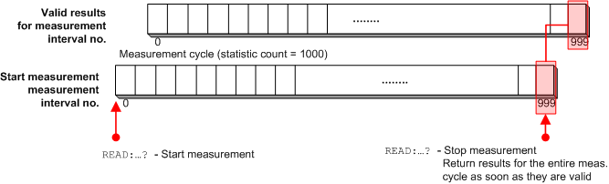

Aborts the current measurement (if a measurement is running), starts a new measurement in single-shot mode, and returns the results including the "Reliability and Error Indicators" at the end of the measurement cycle.

READ...? does not change any of the measurement control settings. The measurement initiated by READ...? is stopped after one single-shot (--> measurement state RDY), however, the repetition mode itself is not changed.
READ...? can be used in all measurement states.
Performance considerations, multi-evaluation measurements The READ query is view-specific and calculates only the results needed for a particular view. Thus a READ query can be faster than the context-specific command sequence INITiate...; FETCh...?. In contrast to FETCh queries, READ commands also provide valid results for disabled views in multi-evaluation measurements, see "Retrieving results for disabled views". |